| [ Team LiB ] |
|
2.4 Constitutive RelationshipsExamples 2.1 and 2.2 required more than simple material balances to define the modeling equations. These required relationships are known as constitutive equations; several examples of constitutive equations are shown in this section. Gas LawProcess systems containing a gas will often need a gas-law expression in the model. The ideal gas law is commonly used to relate pressure (P), molar volume (), and temperature (T): 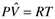 The van der Waal's PT relationship contains two parameters (a and b) that are system specific: 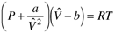 For other gas laws, see a thermodynamics text, such as Smith, Van Ness, and Abbott (2001). Chemical ReactionsThe rate of reaction per unit volume (mol/volume*time) is usually a function of the concentration of the reacting species. For example, consider the reaction A + 2B 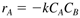 where rA is the rate of reaction of A (mol A/volume time), k the reaction rate constant, CA the concentration of A (mol A/volume), and CB the concentration of B (mol B/volume). Reaction rates are normally expressed in terms of generation of a species. The minus sign indicates that A is consumed in the reaction above. It is good practice to associate the units with all parameters in a model. For consistency in the units for rA, we find that k has units of (vol/mol B * time). Notice that 2 mol of B react for each 1 mol of A. Then we can write 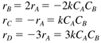 Usually, the reaction rate coefficient is a function of temperature. The most commonly used representation is the Arrhenius rate law, 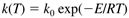 where k(T) is the reaction rate constant, as a function of temperature, k0 the frequency factor or preexponential factor, E the activation energy (cal/gmol), R the ideal gas constant (1.987 cal/gmol K), and T the absolute temperature scale (K or R.) The frequency factor and activation energy can be estimated based on data of the reaction constant as a function of reaction temperature. Taking the natural logarithm of the Arrhenius rate law, we find 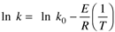 and we see that k0 and E can be found from the slope and intercept of a plot of (ln k) vs. (1/T). Equilibrium RelationshipsThe relationship between the liquid- and vapor-phase compositions of component i, when the phases are in equilibrium, can be represented by 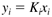 where yi is the vapor-phase mole fraction of component i, xi the liquid-phase mole fraction of component i, and Ki the vapor/liquid equilibrium constant for component i. The equilibrium constant is a function of composition and temperature. The simplest assumption for the calculation of an equilibrium constant is to use Raoult's law. Here, 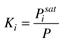 where the pure component vapor (saturation) pressure often has the following form: 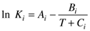 Often, we will see a constant relative volatility assumption made, to simplify vapor/liquid equilibrium models. In a binary system, the relationship often used between the vapor and liquid phases for the light component is 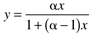 where x is the liquid-phase mole fraction of light component, y the vapor-phase mole fraction of light component, and a the relative volatility (a > 1). Heat TransferThe rate of heat transfer through a vessel wall separating two fluids (a jacketed reactor, for example) can be described by 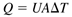 where Q is the rate of heat transfer from hot to cold fluid, U the overall heat transfer coefficient, A the area for heat transfer, and DT the difference between hot and cold temperatures. At the design stage the overall heat transfer coefficient can be estimated from correlations; it is a function of fluid properties and velocities. The individual film heat transfer coefficients (hi and ho), the metal conductivity (k, and thickness, Dx), and a fouling factor (f) can be used to determine the overall heat transfer coefficient from the relationship 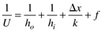 The individual film coefficients are a strong function of fluid properties and velocities. The overall heat transfer coefficient is often estimated from experimental data. Flow Through ValvesThe flow through valve is often described by the relationship 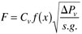 where F is the volumetric flow rate, Cv the valve coefficient, x the fraction the valve is open (0 x 1), DPv the pressure drop across the valve, s.g. the specific gravity of the fluid, and f(x) the flow characteristic (varies from 0 to 1, as a function of x). Three common valve characteristics are (i) linear, (ii) equal-percentage, and (iii) quick-opening. For a linear valve, f(x) = x. For an equal-percentage valve, f(x) = ax - 1. For a quick-opening valve, 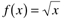. These flow characteristics are plotted in Figure 2-6. Figure 2-6. Valve flow characteristics. The sensitivity or valve "gain" is related to the slope of the curve.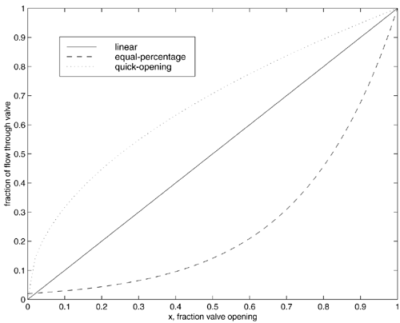 Notice that for the quick-opening valve, the sensitivity (or "gain") of flow to valve position is high at low openings and low at high openings; the opposite is true for an equal-percentage valve. The sensitivity of a linear valve does not change as a function of valve position. The equal-percentage valve is commonly used in chemical processes because of desirable characteristics when installed in piping systems where a significant piping pressure drop occurs at high flow rates. Knowledge of these characteristics will be important when developing feedback control systems. Flow control is discussed in detail in Module 15. |
| [ Team LiB ] |
|